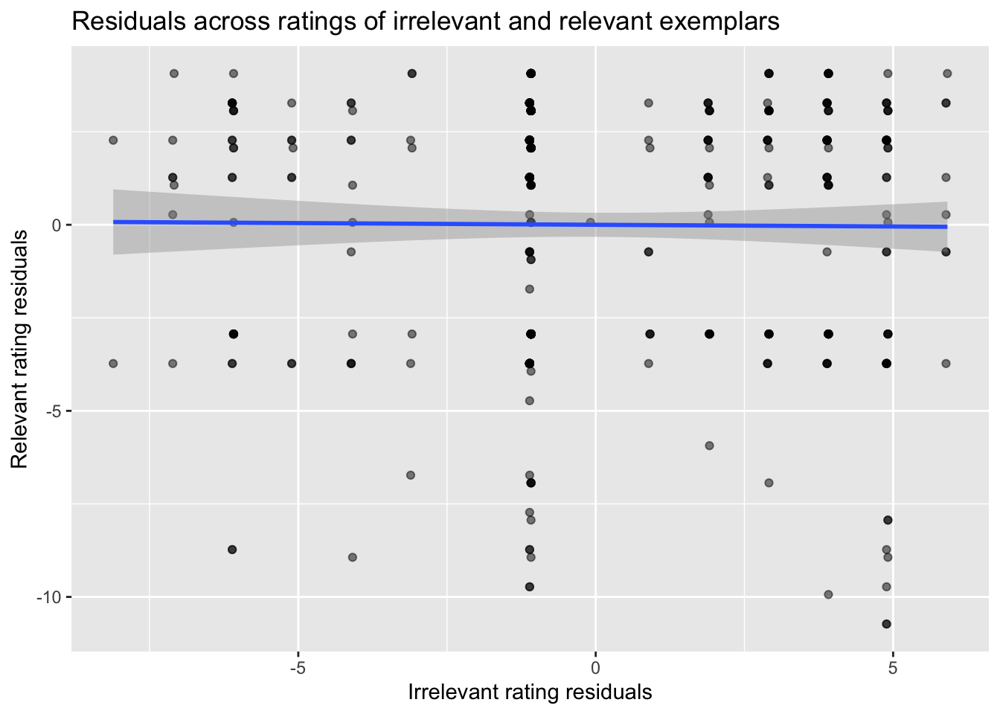
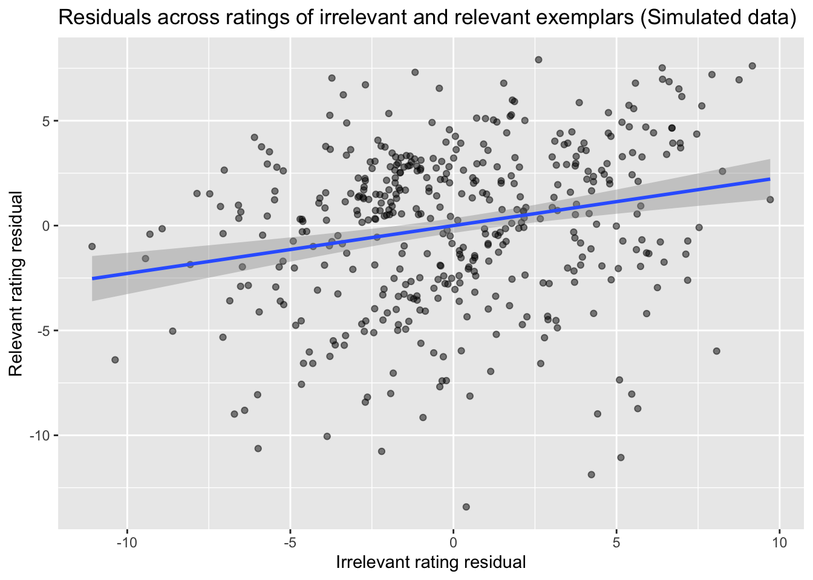
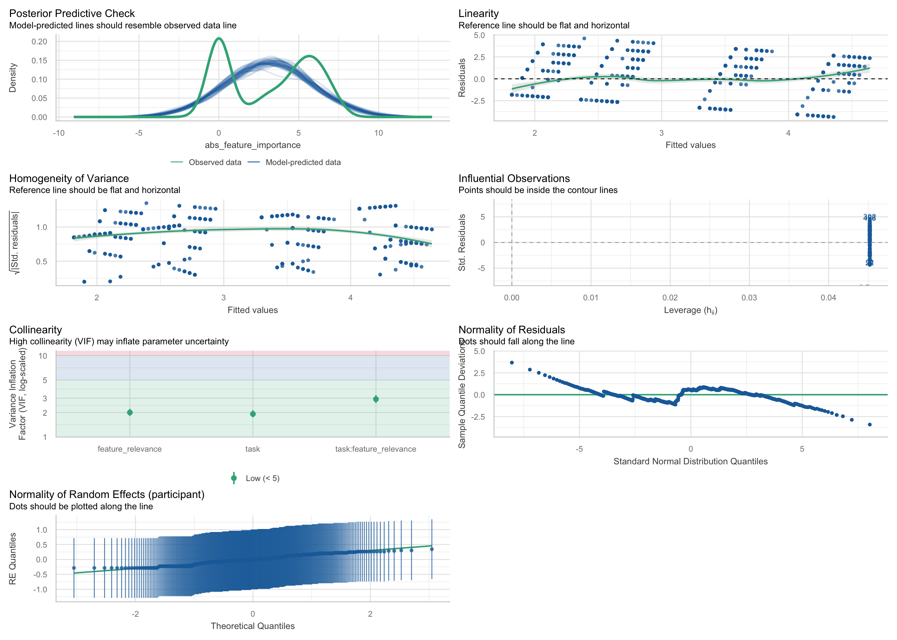
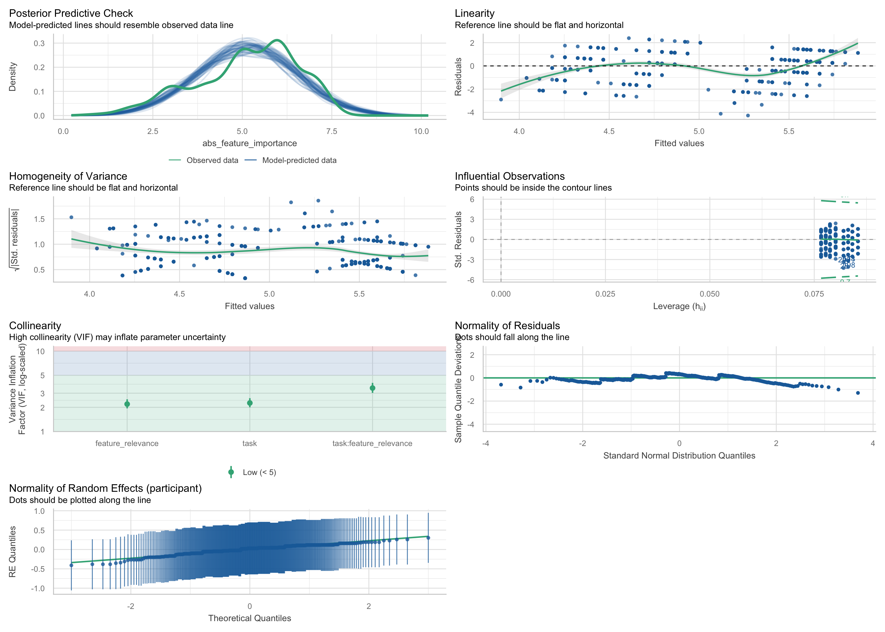

Final Project: Evaluating a Mixed Effects Model using Real Data
In the following post, I will walk through the use of a mixed effects model for data in an experiment on category learning. I will start by explaining the experiment itself, before fitting a model. Finally, I will elaborate on the decision-making process in choosing this model, check assumptions, and see whether there are alternate modeling approaches one should use in this case.
In the study under consideration, people observed the association between reptiles with differing features and their fertility. Their task was to figure out which of the two features was relevant to fertility, and which was irrelevant. The four stimuli used are pictured below:
As you can see, we had two features each with two directions: flat feet or curved feet, and red or green coloring. When a feature was relevant, one of the directions of that feature would be associated with less fertility, the other with more fertility (e.g., red -> higher fertility, green -> lower fertility). However, this association was probabilistic: We would draw how fertile a given reptile was on each trial from a normal distribution. The purpose of this was to create noise, such that the irrelevant feature had some association with fertility even though it was not part of the data-generating process.
The key question of our study was as follows: Do participants who are prompted to accommodate observations (i.e., explain them after the fact) and those who are prompted to predict observations (i.e., generate predictions before observations are made) differ in what they learn about these stimuli?
In the learning by predicting condition, participants learned by seeing one reptile at a time during training, and then estimated how fertile it is (the outcome variable). After each training trial, they received feedback in the form of how fertile it actually was. In the learning by accommodating condition, participants learned by seeing both the imaginary reptile and how fertile it is, and provided a free response about why it was that fertile. The exact trial order for training was yoked between participants in each condition, in that every unique order of training trials is assigned once to a participant in each condition.
In order to evaluate the differences between these conditions, we used the following measure:
Feature-importance ratings: The ratings of importance that participants assign to each feature. These are captured by a series of questions to participants: a) whether a feature is relevant, b) which value of that feature was positively relevant to fertility, and c) how strongly relevant it was (1-7). These are converted to a -7 to 7 scale, where 0 represents that the feature made no difference to the outcome, -7 represents that the feature value made a (strong) negative difference to the outcome, and 7 represents that the feature value made a (strong) positive difference to the outcome
We ended up using two measures of feature importance. The first was the measure above from -7 to 7, whereas the second was one that captured the absolute value of feature importance. The theoretical reason for this is that we suspected there were two ways in which accommodators might differ: first, they might overfit in that they systematically get the direction of the irrelevant feature right (latching onto noise), or perhaps they just inflate the importance of the irrelevant feature, irrespective of whether they picked up on the noise. The former measure is captured by the feature importance ratings (as negative signs mean someone got the direction systematically wrong), the latter by their absolute value.
This brings us to the topic of what sort of model we ought to use to evaluate differences between participants. Generally, we were interested in whether there were main effects or interactions involving condition. As I mentioned, were especially interested in whether accommodators assign higher importance scores to irrelevant features than predictors.
What sort of model should we use to evaluate this data? One option would be to use lm() in r in order to evaluate feature importance scores as a function of condition and task relevance. However, lm() and other traditional statistical tests make a few key assumptions:
Linearity: the relationship between the predictor/outcome can be modeled using a straight line.
Independence of observations: the probability of a data point taking on a specific value is independent of the values taken by all other data points (Singman & Kellen, 2019).
Homoscedasticity: The residuals have the same variance across levels of the independent variables.
Normality of residuals: the residuals follow a normal distribution.
I have highlighted the second assumption for an important reason. Note that in this study, this assumption is violated before we even look at the data: we know that the probability of the data taking on a value is not independent from all other values, because the same person will make multiple judgments in this study. They provide two feature importance ratings, one for each stimulus.
Why is this a problem? We know that measurements taken from the same person are likely to be correlated (Singman & Kellen, 2019). For instance, maybe one person has a generally more conservative baseline for saying something matters, and so they will rate all features as much less important than someone else, irrespective of their actual relevance. What do we do in these situations?
In this tutorial, we will examine the use of linear mixed effects models as a solution to this problem. These models capture two kinds of effects: first, fixed effects, which represent the population-level effect of predictors (these are the main effects or interactions we are used to getting with normal linear models). Second, random effects, which are sources of variability across groups within the experiment. In our case the groups are just different participants.
Let’s begin by loading in the cleaned data.
library(tidyverse) # For reading our CSV
── Attaching core tidyverse packages ──────────────────────── tidyverse 2.0.0 ──
✔ dplyr 1.1.4 ✔ readr 2.1.5
✔ forcats 1.0.1 ✔ stringr 1.5.2
✔ ggplot2 4.0.0 ✔ tibble 3.3.0
✔ lubridate 1.9.4 ✔ tidyr 1.3.1
✔ purrr 1.1.0
── Conflicts ────────────────────────────────────────── tidyverse_conflicts() ──
✖ dplyr::filter() masks stats::filter()
✖ dplyr::lag() masks stats::lag()
ℹ Use the conflicted package (<http://conflicted.r-lib.org/>) to force all conflicts to become errors
library(lme4) # For random effects models
Warning: package 'lme4' was built under R version 4.5.2
Loading required package: Matrix
Attaching package: 'Matrix'
The following objects are masked from 'package:tidyr':
expand, pack, unpack
library(emmeans) # For pairwise comparisons
Welcome to emmeans.
Caution: You lose important information if you filter this package's results.
See '? untidy'
library(lmerTest) # For a nice summary for lme4
Warning: package 'lmerTest' was built under R version 4.5.2
Attaching package: 'lmerTest'
The following object is masked from 'package:lme4':
lmer
The following object is masked from 'package:stats':
step
#Let's load in the cleaned datadf_long <-read_csv('/Users/sm6511/Quarto Blog/data/df_long_for_R.csv') |>mutate(task =relevel(factor(task), ref ="predict"),feature_relevance =relevel(factor(feature_relevance), ref ="irrelevant"),feature_dimension =relevel(factor(feature_dimension), ref ="feet"),color_high =relevel(factor(color_high), ref ="Y"),feet_high =relevel(factor(feet_high), ref ="C") ) #Here I set reference levels for the statistical tests to be used later on.
Rows: 868 Columns: 12
── Column specification ────────────────────────────────────────────────────────
Delimiter: ","
chr (8): task, relevant_dim, irrelevant_dim, color_high, feet_high, feet_dis...
dbl (4): participant, feature_importance, reported_relevant, abs_feature_imp...
ℹ Use `spec()` to retrieve the full column specification for this data.
ℹ Specify the column types or set `show_col_types = FALSE` to quiet this message.
In the traditional linear model discussed earlier-which we could implement with lm()-there is a single intercept (β0) that represents the grand mean for all participants. However, a linear mixed model allows us to specify a random-intercepts model, in which each individual is allowed to have their own unique baseline effect. What this means, practically, is that if participants have the sort of idiosyncrasies described earlier, the model will capture such idiosyncrasies.
Let’s fit a model like this using lmer() from lme4. We will start by fitting a model on the regular feature importance ratings:
Linear mixed model fit by REML. t-tests use Satterthwaite's method [
lmerModLmerTest]
Formula: feature_importance ~ task * feature_relevance + (1 | participant)
Data: df_long
REML criterion at convergence: 4554.5
Scaled residuals:
Min 1Q Median 3Q Max
-3.2173 -0.6088 -0.2184 0.8734 1.7731
Random effects:
Groups Name Variance Std.Dev.
participant (Intercept) 0.00 0.000
Residual 11.12 3.335
Number of obs: 868, groups: participant, 434
Fixed effects:
Estimate Std. Error df
(Intercept) 1.08756 0.22636 864.00000
taskaccommodate 0.02304 0.32012 864.00000
feature_relevancerelevant 1.84793 0.32012 864.00000
taskaccommodate:feature_relevancerelevant 0.76959 0.45272 864.00000
t value Pr(>|t|)
(Intercept) 4.805 1.83e-06 ***
taskaccommodate 0.072 0.9426
feature_relevancerelevant 5.773 1.09e-08 ***
taskaccommodate:feature_relevancerelevant 1.700 0.0895 .
---
Signif. codes: 0 '***' 0.001 '**' 0.01 '*' 0.05 '.' 0.1 ' ' 1
Correlation of Fixed Effects:
(Intr) tskccm ftr_rl
taskaccmmdt -0.707
ftr_rlvncrl -0.707 0.500
tskccmmdt:_ 0.500 -0.707 -0.707
optimizer (nloptwrap) convergence code: 0 (OK)
boundary (singular) fit: see help('isSingular')
Note that we set the reference level for feature_relevance to ‘irrelevant’, and so the simple effect of ‘taskaccommodate’ above tells us whether accommodators assign higher importance scores to irrelevant features. As it turns out, they do not do so with this measure! Before looking at the model that uses absolute values to see if that makes a difference, let’s evaluate our use of a model with random intercepts here. The difference between this model and a model with lm() involves the term (1|participant). Generally, this term allows each group to have its own intercept. In our case, a group is just a single participant.
However, there is a problem with our use of lmer() in this case: if we check the output, we got a warning: ‘boundary (singular) fit: see help(’isSingular’)’. When we check the help page on this warning, it tells us the following: “some ‘dimensions’ of the variance-covariance matrix have been estimated as exactly zero’. We can see that in our case, the variance and standard deviation of the random effect are at zero. Why is this? One reason could be that we only have two observations per participant, which is not enough for the model to find participant differences. The between-subjects effects of feature relevance are much stronger. Alternatively, perhaps our introduction of signs (negative values) cancels out any grouping effect of participants. More on this later. First, we confirm the problem with this model by running isSingular and looking at the correlation values for the intercept term.
isSingular(model1)
[1] TRUE
VarCorr(model1)
Groups Name Std.Dev.
participant (Intercept) 0.0000
Residual 3.3345
We can see from these outputs that the grouping did not explain variance, and we have some leftover unexplained variation in our model. We can go a bit further to check this by looking at the residuals for importance ratings after accounting for task and relevance. In other words, if we subtract the mean rating within each task x feature relevance condition, we can see how much is left over that is not explained by condition differences, and so could be the result of differences in each participant’s mean tendencies. If there was a strong baseline difference between participants that matters here, then you might expect people who rate irrelevant features more highly to also rate relevant features more highly. Put more simply, do participants who give higher ratings for irrelevant features also tend to give higher ratings in the other condition? This would suggest unexplained variance. Let’s see if that’s the case:
library(dplyr)library(ggplot2)df_resid <- df_long %>%group_by(task, feature_relevance) %>%mutate(residuals = feature_importance -mean(feature_importance)) %>%#get residualsungroup() %>%select(participant, task, feature_relevance, residuals) %>%pivot_wider(id_cols =c(participant, task),names_from = feature_relevance,values_from = residuals )ggplot(df_resid, aes(x = irrelevant, y = relevant)) +geom_point(alpha = .5) +geom_smooth(method ="lm") +#add a line plotting the relationshiplabs(title ="Residuals across ratings of irrelevant and relevant exemplars",x ="Irrelevant rating residuals",y ="Relevant rating residuals" )
`geom_smooth()` using formula = 'y ~ x'

What we can see is there’s no real correlation here between the residuals, so some participants are not prone to assigning higher importance scores than others. Therefore, there just isn’t enough structure in the data for the random intercepts to matter. This could be because there really aren’t differences in baseline tendencies for participants in these paradigms, or that we don’t have enough data to capture them. However, it was still a good idea to start with this model. Theoretically, the baseline between participants could have indeed mattered. In fact, we can generate a scenario where it would matter. Let’s suppose participants rated many more irrelevant and relevant items, and lets simulate some baseline tendency differences between participants:
library(dplyr)###First we are going to copy each row, to pretend that participants saw 10x more stimulidf_expanded <- df_long %>% dplyr::slice(rep(1:n(), each =10))#Now we are 'simulating' different baseline tendencies per participant. So what we have is a vector with some preset baseline tendency for each participantset.seed(1)participant_offsets <-rnorm(n_distinct(df_expanded$participant), #size of vector = amount of participantsmean =0,sd =2)#Now we go back to df_expanded, and we are adding that offset to their data.df_expanded <- df_expanded %>%mutate(pid =as.numeric(factor(participant)),feature_importance_sim = feature_importance + participant_offsets[pid] +rnorm(n(), 0, 1) )#This just refits the same model as beforemodel_sim <-lmer( feature_importance_sim ~ task * feature_relevance + (1| participant),data = df_expanded)summary(model_sim)
Linear mixed model fit by REML. t-tests use Satterthwaite's method [
lmerModLmerTest]
Formula: feature_importance_sim ~ task * feature_relevance + (1 | participant)
Data: df_expanded
REML criterion at convergence: 42783.8
Scaled residuals:
Min 1Q Median 3Q Max
-3.5921 -0.6573 0.0032 0.6715 3.9332
Random effects:
Groups Name Variance Std.Dev.
participant (Intercept) 8.614 2.935
Residual 6.872 2.622
Number of obs: 8680, groups: participant, 434
Fixed effects:
Estimate Std. Error df
(Intercept) 1.080e+00 2.070e-01 4.657e+02
taskaccommodate 1.443e-01 2.928e-01 4.657e+02
feature_relevancerelevant 1.858e+00 7.959e-02 8.244e+03
taskaccommodate:feature_relevancerelevant 7.296e-01 1.125e-01 8.244e+03
t value Pr(>|t|)
(Intercept) 5.215 2.78e-07 ***
taskaccommodate 0.493 0.622
feature_relevancerelevant 23.349 < 2e-16 ***
taskaccommodate:feature_relevancerelevant 6.482 9.58e-11 ***
---
Signif. codes: 0 '***' 0.001 '**' 0.01 '*' 0.05 '.' 0.1 ' ' 1
Correlation of Fixed Effects:
(Intr) tskccm ftr_rl
taskaccmmdt -0.707
ftr_rlvncrl -0.192 0.136
tskccmmdt:_ 0.136 -0.192 -0.707
#Now we can produce th same plot we did before and see whether there is a correlation.df_resid <- df_expanded %>%group_by(task, feature_relevance) %>%mutate(residuals = feature_importance_sim -mean(feature_importance_sim)) %>%ungroup() %>%group_by(participant, task, feature_relevance) %>%summarize(mean_residual =mean(residuals),.groups ="drop" ) %>%pivot_wider(id_cols =c(participant, task),names_from = feature_relevance,values_from = mean_residual )ggplot(df_resid, aes(x = irrelevant, y = relevant)) +geom_point(alpha = .5) +geom_smooth(method ="lm") +labs(title ="Residuals across ratings of irrelevant and relevant exemplars (Simulated data)",x ="Irrelevant rating residual",y ="Relevant rating residual" )
`geom_smooth()` using formula = 'y ~ x'

The above plot confirms what we should see given built-in baseline tendencies: there is some effect of grouping (by participant), wherein certain participants are more prone to assigning higher ratings to both features than others, even after we account for the effects of task and relevance.
Now that we have established that our use of lmer() for feature importance scores was unnecessary, even if worth checking, let’s look at the absolute value of feature importance scores.
Linear mixed model fit by REML. t-tests use Satterthwaite's method [
lmerModLmerTest]
Formula: abs_feature_importance ~ task * feature_relevance + (1 | participant)
Data: df_long
REML criterion at convergence: 4113.7
Scaled residuals:
Min 1Q Median 3Q Max
-1.7217 -0.9347 0.2130 0.8909 1.8227
Random effects:
Groups Name Variance Std.Dev.
participant (Intercept) 0.2841 0.533
Residual 6.3973 2.529
Number of obs: 868, groups: participant, 434
Fixed effects:
Estimate Std. Error df t value
(Intercept) 2.0461 0.1755 862.4411 11.661
taskaccommodate 0.6037 0.2482 862.4411 2.433
feature_relevancerelevant 1.4793 0.2428 431.9993 6.092
taskaccommodate:feature_relevancerelevant 0.2258 0.3434 431.9993 0.658
Pr(>|t|)
(Intercept) < 2e-16 ***
taskaccommodate 0.0152 *
feature_relevancerelevant 2.47e-09 ***
taskaccommodate:feature_relevancerelevant 0.5112
---
Signif. codes: 0 '***' 0.001 '**' 0.01 '*' 0.05 '.' 0.1 ' ' 1
Correlation of Fixed Effects:
(Intr) tskccm ftr_rl
taskaccmmdt -0.707
ftr_rlvncrl -0.692 0.489
tskccmmdt:_ 0.489 -0.692 -0.707
Notice how much our findings have changed! First, we no longer get the ‘Is Singular’ errors, indicating that random intercepts did make a difference here. In fact, and though I will not produce another plot of the residuals, if we did, they would look similar to the simulated pattern. What does this tell us? When we look at whether certain people report higher importance scores generally, without accounting for whether they got the direction right there is a random effect that results from grouping by participant! This is important because, in fact, participants did not report a score form -7 to 7, they reported a score from 1-7. They are assigned a score of ‘0’ is they say that a feature does not matter to begin with. We transformed it to -7 to 7 to measure whether they got the direction right. In that sense, the truer measure of what they initially did shows a bias by participant.
Next, even after accounting for this difference, we now do see a difference between predictors and accommodators, wherein accommodators assign higher importance scores to irrelevant features than predictors! However, we do not see an interaction, so it does not appear that the difference between the scores they assign to irrelevant v relevant features differs by condition. This suggests that we should investigate whether they also assign higher importance scores to relevant feature. To do this, we can use emmeans, which estimates the mean difference for each level of a picked variable. In this case, we look at mean task difference for each level of feature relevance:
We can confirm from the above that accommodators actually assign higher scores to both relevant and irrelevant features. We had predicted they would only do so for irrelevant features, so this is a useful result. It suggests that accommodators inflate how important they think features are generally, irrespective of relevance.
We’ve now looked at two models and seen that in one case, clustering matters, and in the other case, it does not. There’s a nice metric that will let us evaluate this directly, the ‘Interclass Correlation Coefficient’ (ICC). This is a measure of how much of the total variability is due to the groups, where an ICC of 0 would mean there’s no effect of grouping. Based on what we saw above, we would expect this measure to be problematic for model1 (and perhaps have an ICC of 0) but show some non-zero number for model2.
library(performance)icc(model1)
Warning: Can't compute random effect variances. Some variance components equal
zero. Your model may suffer from singularity (see `?lme4::isSingular`
and `?performance::check_singularity`).
Decrease the `tolerance` level to force the calculation of random effect
variances, or impose priors on your random effects parameters (using
packages like `brms` or `glmmTMB`).
Our adjusted ICC for model 2 is .043, which is fairly low. So even though there is an effect of grouping here, it is not very strong.
Finally, let’s do some diagnostics to evaluate whether some of the other assumptions relevant to mixed linear models hold with our data. check_model from the performance package is a nice way to run many of these at once.
performance::check_model(model2)

A few tests stand out. First, the posterior predictive check. Of the assumptions, this is the most concerning. What this check looks at is, after we fit the model, does the simulated data given the model match the the actual data? We learn something interesting here: it deviates, In particular, the real data is clearly bimodal. This actually may not be theoretically surprising, because we are again using a likert scale of importance ratings to collect data. Much of the data is probably clustered towards the low and high ends, which may suggest that people either do not report that a feature matters at all (and are around 0) or do report, and report fairly high values.
Second, the residuals are not entirely normal. In particular, we see a sort of s-shape, and this is what we might expected given that our outcome is bounded from 0-7. These two deviations from what we’d assume with our mixed model are likely related, in that the s-shaped residuals could be a consequence of the bimodal data.
Since we found these departures from the assumptions of linear models, it might be useful to think about what alternate tests we could do that better match the data. For instance, perhaps we should consider an ordinal model, on the reasoning that we have ranked responses (from 0 to 7) that we can’t treat as continuous. Alternatively, perhaps we should first model whether or not people think a feature is relevant at all and then simply form a model for the participants who do rate a feature as relevant.
One possibility for the latter idea is a ‘hurdle’ model which asks two questions: first, what is the probability of getting 0 - in our case, do our predictors make participants more likely to ‘opt in’ and believe a feature matters to begin with. Second, for those participants who opt in, do our predictors make a difference to their ratings.
#We are going to first use a generalized linear model. We are loading this in now because for the first step, our outcome isn't going to be continuous. We are going to ask 'does a participant say something is important at all'df_long <- df_long |>mutate(is_important = abs_feature_importance >0)model_hurdle1 <-glmer( is_important ~ task * feature_relevance + (1| participant),family = binomial, data = df_long) #again, this model is for the binary outcome of whether a feature is said to matter to begin withsummary(model_hurdle1)
Generalized linear mixed model fit by maximum likelihood (Laplace
Approximation) [glmerMod]
Family: binomial ( logit )
Formula: is_important ~ task * feature_relevance + (1 | participant)
Data: df_long
AIC BIC logLik -2*log(L) df.resid
1122.2 1146.0 -556.1 1112.2 863
Scaled residuals:
Min 1Q Median 3Q Max
-1.8493 -1.0893 0.5407 0.8756 1.0557
Random effects:
Groups Name Variance Std.Dev.
participant (Intercept) 0.04835 0.2199
Number of obs: 868, groups: participant, 434
Fixed effects:
Estimate Std. Error z value Pr(>|z|)
(Intercept) -0.1027 0.1376 -0.746 0.455559
taskaccommodate 0.3370 0.1956 1.723 0.084927
feature_relevancerelevant 0.7076 0.1997 3.543 0.000396
taskaccommodate:feature_relevancerelevant 0.3036 0.2909 1.044 0.296621
(Intercept)
taskaccommodate .
feature_relevancerelevant ***
taskaccommodate:feature_relevancerelevant
---
Signif. codes: 0 '***' 0.001 '**' 0.01 '*' 0.05 '.' 0.1 ' ' 1
Correlation of Fixed Effects:
(Intr) tskccm ftr_rl
taskaccmmdt -0.705
ftr_rlvncrl -0.685 0.489
tskccmmdt:_ 0.466 -0.659 -0.669
df_positive <- df_long |>filter(abs_feature_importance >0) #now we are going to look only at participants who 'opted-in' to saying a feature mattered. Here, we can switch back to using a linear model.model_hurdle2 <-lmer( abs_feature_importance ~ task * feature_relevance + (1| participant),data = df_positive)summary(model_hurdle2)
Linear mixed model fit by REML. t-tests use Satterthwaite's method [
lmerModLmerTest]
Formula: abs_feature_importance ~ task * feature_relevance + (1 | participant)
Data: df_positive
REML criterion at convergence: 1783.6
Scaled residuals:
Min 1Q Median 3Q Max
-3.4533 -0.4949 0.2667 0.6031 1.9326
Random effects:
Groups Name Variance Std.Dev.
participant (Intercept) 0.1268 0.3561
Residual 1.5301 1.2370
Number of obs: 532, groups: participant, 370
Fixed effects:
Estimate Std. Error df t value
(Intercept) 4.3087 0.1267 527.9744 34.005
taskaccommodate 0.4404 0.1724 527.9733 2.555
feature_relevancerelevant 1.1528 0.1634 340.6387 7.055
taskaccommodate:feature_relevancerelevant -0.2762 0.2214 319.3298 -1.247
Pr(>|t|)
(Intercept) < 2e-16 ***
taskaccommodate 0.0109 *
feature_relevancerelevant 9.68e-12 ***
taskaccommodate:feature_relevancerelevant 0.2132
---
Signif. codes: 0 '***' 0.001 '**' 0.01 '*' 0.05 '.' 0.1 ' ' 1
Correlation of Fixed Effects:
(Intr) tskccm ftr_rl
taskaccmmdt -0.735
ftr_rlvncrl -0.747 0.549
tskccmmdt:_ 0.551 -0.748 -0.738
What we find is interesting: we find only marginally significant evidence that accommodators are more likely to believe that irrelevant features matter to begin with, but we find significant evidence that accommodators believe irrelevant features matter more than predictors, for those participants who say the irrelevant feature matters!
Now that we’ve switched our approach to this two-step model, it is worth checking whether our linear model assumptions are now less violated. So let’s run the performance package again:
performance::check_model(model_hurdle2)

We can now see that our new model does a lot better! first, the posterior predictive check is now aligned, and we aren’t dealing with a mismatch between a bimodal distribution and a normal distribution. There is still an s-shaped pattern in terms of the residuals, but it looks better than before. There are still some issues: for instance, there appears to be a cluster with some influential observations, but we could dig into this more deeply by excluding them and rerunning the model.
Before ending, I want to briefly consider the other part of random effects: random slopes. Should we have used random slopes in addition to random intercepts in this model? First, we should consider what this means. In this case, we might be interested in whether participants differ in how strongly they distinguish relevant and irrelevant features on an individual basis. Again, this is different from a fixed effect wherein we see whether this differs as a function of task. Instead, we just want to know whether, when we account for those effects, there is left over variability that can be captured by differences in participants’ sensitivity to relevance. Hence, there is a theoretical reason to include random slopes when analyzing this data.
Error : number of observations (=868) <= number of random effects (=868) for term (1 + feature_relevance | participant); the random-effects parameters and the residual variance (or scale parameter) are probably unidentifiable
As it turns out, however, in this case we do not have enough data to produce a meaningful model with random slopes. This is, again, because we only produce two ratings per participant.
Summary
We first found that using lmer() is useful when there is a theoretical reason to expect that a grouping effect could affect the data you collect. Second, we investigated why we found that no variability was explained using random intercepts when we transformed our Likert data, but not when investigating a model based on the original values of the data. Third, we checked our assumptions for using a linear mixed model generally, and found that a couple were violated. We discussed some approaches to deal with this.
As a final exercise, let’s go through some of the output in the model we decided on and discuss writing up the results.
To examine whether accommodators and predictors differed in how they assign importance scores to relevant and irrelevant features, we used a two-step hurdle model, first examining whether accommodators were more likely than predictors to say an irrelevant feature mattered to begin with, and then examining, amongst participants who thought irrelevant features mattered, whether accommodators were likely to inflate the importance of irrelevant features.
For the first step, we fit a mixed-effects logistic regression predicting whether participants said a feature mattered at all (assigned a non-zero importance score) with task, feature relevance, and their interaction as predictors. In line with expectations, we found that participants were more likely to endorse relevant features as important than irrelevant features (b =.71, SE = .2, z = 3.54, p <.001). We found only marginally significant evidence that accommodators were more likely than predictors to report that irrelevant features mattered (b = .34, SE = .20, z = 1.72, p = .085). The interaction between task and feature relevance was not significant (b = .30, SE = .29, z = 1.04, p = .297), indicating that accommodators do not differ in selectively distinguishing irrelevant features from relevant features.
For the second step, we fit a linear mixed model predicting feature importance scores from task (predict v accommodate), feature relevance (relevant v irrelevant), and their interaction as predictors. The variance from the random intercept was 0.13, indicating some small effect of baseline importance ratings from participants.
In line with our predictions, we found that relevant features were rated as more relevant than irrelevant features (b = 1.15, SE = .16, t(340.64) = 7.06, p <. 001). We also found, in line with our predictions, that accommodators assign higher importance scores to irrelevant features than predictors (b = .44, SE = .17, t(527.87) = 2.56, p = .11). We did not find a significant interaction between task and feature relevance (b = -.28, SE = .22, t(319.33) = -1.25, p = .213), indicating that accommodators are not more likely to inflate irrelevant features than relevant features, relative to predictors.
Overall, our results suggest that accommodators are more likely to inflate the importance of an irrelevant feature once they think that it matters. However, there is only weak evidence that they are more likely to believe irrelevant features, and no evidence that this is a selective effect only for irrelevant features. Instead, it appears that they inflate the importance of relevant and irrelevant features generally.